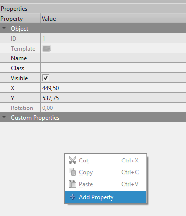
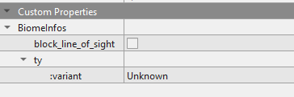

Introduction
bevy_ecs_tiled is a Bevy plugin for working with 2D tilemaps created with the Tiled map editor.
It relies upon the official Tiled Rust bindings to parse and load Tiled map files and the bevy_ecs_tilemap crate to perform rendering.
It aims to provide a simple and ergonomic workflow by using Tiled as an editor when working on Bevy 2D games.
Features
- Support for several kind of maps: orthogonal, isometric or hexagonal maps, finite or infinite layers, with external or embedded tilesets, using atlases or several images.
- Support various Tiled features: animated tiles, images layers, tile objects or Tiled world when a single map is not enough.
- Each Tiled item, such as layer, tile or object, is represented by a Bevy entity and everything is organized under a Bevy hierarchy: layers are children of the Tiled map entity, tiles and objects are children of these layers.
VisibilityandTransformare automatically propagated down the hierarchy. - Easily control how to spawn and despawn maps. Use Bevy events and observers to customize how your scene is spawned or notify you when the map is actually loaded and ready to use.
- Build your map in Tiled and let the plugin take care of the rest:
- Automatically spawn Rapier or Avian physics colliders on tiles or objects.
- Use Tiled custom properties to automatically insert your own components on objects, tiles or layers.
- Hot-reloading: work on your map in Tiled and see it update in Bevy without having to re-compile / restart your game.
Disclaimer: both this book and the whole crate have been heavilly inspired by the bevy_ecs_ldtk crate, which is basically the equivalent of bevy_ecs_tiled but for the LDTK map editor.
Thanks for the inspiration! :)
Purpose of this book
This book aims to give you a better understanding of how bevy_ecs_tiled works, what you can achieve with it and how you can do it.
It will focus on high-level concepts, design concerns and basic tutorials.
If you need an API reference, please have a look at the bevy_ecs_tiled API reference.
The examples directory is also a good place to start.
Finally, this book assume you already have some sort of knowledge about Bevy and Tiled map editor. There are already some good documentations available on these topics and some resources are referenced in the dedicated section.
Architecture of this book
This book is divided in several categories:
- Design and explanation: how does the plugin work and why some technical choices have been made;
- How-To's: in-depth tutorials about a specific aspect of the plugin;
- Migration guides: migration guides for specific versions;
- Miscellaneous: other topics that did not fit in other categories.
Good reading ! :)
FAQ
What's the current status of the crate ?
While the crate is already definitely usable, it is still under active development.
Expect bugs, missing features and breaking changes !
However, I plan to follow semver and to provide a migration guide each time there are breaking changes (for instance, upon a new Bevy release).
What kind of maps are supported ?
We should support nearly all maps from Tiled :
- orthogonal
- "flat-top" hexagonal
- "pointy-top" hexagonal
- "diamond" isometric
There is however an exception: we do not (and don't plan to) support isometric "staggered" maps (#31).
Also, some of the feature are currently not working very well for "diamond" isometric maps: colliders don't have the proper shape (#32) and are not always at the right place (#48). But we hope to have better support for them in the future.
I'm using an isometric map and it seems all messed up !
Make sure you are actually using a "diamond" map and not a "staggered" one, which are not supported.
Also, for isometric maps, you may want to tweak the TilemapRenderSettings component from bevy_ecs_tilemap to enable Y-sorting and adjust the chunk size.
More information in the isometric maps example
I want to add physics to my game, how should I do ?
You can automatically spawn physics colliders on tiles or objects using either Avian or Rapier physics backend. Basically, all you have to do is to add another plugin to your app. The crate handle the rest.
You can select on which objects or tiles you colliders are spawn based upon their name and using Tiled builtin collision editor. Everything is explained in the dedicated guide.
I want to update my Bevy entities directly from Tiled, how should I do ?
Let's say you are building a top-down turn-based RPG. You probably want to give each of your tile some kind of information to determine if it can be crossed and what's the associated movement cost.
Using Tiled custom properties, we can define this information in Tiled editor: the crate will automatically insert the corresponding Bevy Component on the tile entity when you load the map, so you can use it in your game logic.
See the dedicated guide for more information.
How to enable map hot-reload ?
You need to enable Bevy file_watcher feature.
bevy_ecs_tiled will then be able to automatically reload a map that was updated with Tiled.
I found a bug ! / Feature 'X' is missing ! / How do I do 'Y' ?
This crate is still a work in-progress so it's likely you'll find bugs, miss some feature or just wonder how to achieve something.
You can have a look to already openned issues and if it does not already exist, please fill a new one ! I try to address every issue as quickly as possible.
Also, contributions are more than welcome ! If you want to contribute, please have a look to contribution guide and feel free to open a PR ! :)
Why using Tiled ?
Tiled may feel a bit outdated in terms of "look and feel", especially when compared with more modern map editor tools like LDTK. However it has a lot of features which make it very interesting.
If we compare with LDTK, they both have a set of powerful features like:
- auto-tiling
- adding gameplay informations to map tiles and objects
- working with worlds
But Tiled also have a set of unique features:
- support for both isometric and hexagonal maps
- native support for animated tiled
Since I specifically wanted to work with hexagonal maps the choice was obvious for me !
However, if it's not your case and you just want to use orthogonal map, you could give a shot at using LDTK instead, especially using the bevy_ecs_ldtk crate.
Or stay with Tiled, it also works :)
Entities hierarchy and marker components
When a map is loaded, it spawns a lot of entities: for the map, for layers, for tiles, for objects, for colliders, ... To keep things nice and tidy, these entites are organized in a parent / child hierarchy and every entity has an associated marker component to help with queries.
Using a hierachy also brings the capability to inherit some of the component from top-level entities down the tree.
For instance, if you change the Visibility of a layer entity, it will automatically apply to all entities below in the hierarchy such as tiles or objects.
Hierarchy
World
When loading a .world asset, you will have a TiledWorldMarker at the top of the tree.
This entity holds the TiledWorldHandle pointing to your .world asset and all the settings that apply to it.
Map
When loading a single .tmx asset, you will have a single TiledMapMarker at the top of the tree.
Otherwise, if working with a Tiled world, you will have several maps which are children of the top-level world.
This entity holds the TiledMapHandle component pointing to your .tmx file and all the settings that apply to it.
Layers
Below the map, we have the layers. They can be of different kinds, which each have their own marker component:
TiledMapObjectLayer: for objects layer.TiledMapTileLayer: for tiles layer.TiledMapImageLayer: for image layer.TiledMapGroupLayer: for group layer (not supported for now).
All of them are also identified by the same generic marker: TiledMapLayer.
Objects
Objects are directly below their TiledMapObjectLayer.
They are identified by a TiledMapObject marker.
Tiles
For tiles, it's a little more complicated.
Below the TiledMapTileLayer, we first have one TiledMapTileLayerForTileset per tileset in the map.
And below these, we find the actual TiledMapTile which correspond to a tile in the layer, for a given tileset.
Physics colliders
At the bottom of the hierarchy, we find physics colliders.
They are spawned below they "source", ie. either a tile layer or an object and they can be identified using their marker component: TiledColliderMarker.
Transform and Visibility propagation
You can refer to the Bevy cheatbook to get an overview of how Transform and Visibility propagation works in general.
In two words, it means that if you change one of these components for a top-level entity, for instance a layer, it will propagate down the hierarchy and apply to all the entities below it. For instance :
- adding the
Visibility::Hiddencomponent to an object layer will make all objects in it to be hidden - moving an object layer will also move all objects it contains
However, there is a special case for tiles.
Since they are not rendered individually but using a "chunk" of several tiles, each individual tile does not have a Transform or Visibility component.
We propagate the Transform and Visibility down to the tilemap and bevy_ecs_tilemap take care of the rest to update the corresponding tiles chunk.
Eventhough you could, you should not try to add these components to individual tiles:
- it will not do what you think, everything is handled at the tilemap level anyway
- it may hurt performances badly
Z-ordering
Since we are working in 2D, the Z-axis will tell which element is in front or behind each other. You can have a look to the Bevy cheatbook for a more in-depth explanation.
Layers
When designing your map under Tiled, you expect that a layer will hide another one which is below in the layer hierarchy. This is very useful when using isometric tiles for instance, because they usually have several tile layers.
To reproduce this behaviour under Bevy, we add an arbitrary offset on the Z-axis to each layers of the hierarchy.
If we call this offset OFFSET:
- the top-level layer will have a Z transform of
0 - the second one will have a Z transform of
-1x OFFSET - the next one of
-2x OFFSET - the next one of
-3x OFFSET - etc...
By default this offset has a value of +100.
It can be changed by tweaking the TiledMapLayerZOffset component.
Since bevy_ecs_tilemap also adds a small Z-axis offset to adjust how chunk are rendered, you probably don't want to have a "too small" value.
Objects on a layer
For a given layer, all objects have the same Z offset. It can be problematic if two objects displaying something (a Sprite for instance) have the same location.
You may observe a "Z-fighting" issue: since both sprite are at the same depth, there is no way for Bevy to properly determine which one is on top of the other. Both will be drawn which is likely to produce some flickering.
Currently, there is not an official way to fix that. You can work-around this issue by using map events and tweak the Z offset of your objects, as shown in the map events example.
Map loading events
When loading a map or a world, you will receive events to both notifty you about the loading progress and allow you to customize how you map will be displayed.
There are five events :
- Four events are sent when loading a map or a world :
TiledMapCreated: called once the map has finished loading, contains information about the map. Called after the world it belongs to if you actually loaded a world.TiledLayerCreated: called once the map it belongs to has finished loading, contains informations about a specific layer.TiledObjectCreated: called once the map it belongs to has finished loading, contains informations about a specific object on a given layer.TiledTileCreated: called once the map it belongs to has finished loading, contains informations about a specific tile on a given layer.
- A fifth one is sent only for worlds :
TiledWorldCreated: called once the world has finished loading, contains informations about the world.
These events are both regular events and entity-scoped observers.
You can either use an EventReader to read them or a Trigger :
#![allow(unused)] fn main() { use bevy::prelude::*; use bevy_ecs_tiled::prelude::*; fn startup(mut commands: Commands, asset_server: Res<AssetServer>) { commands // Spawn a map and attach an observer on it. .spawn(TiledMapHandle( asset_server.load("maps/orthogonal/finite.tmx"), )) // Add an "in-line" observer to detect when the map has finished loading .observe(|trigger: Trigger<TiledMapCreated>, map_query: Query<&Name, With<TiledMapMarker>>| { if let Ok(name) = map_query.get(trigger.event().entity) { info!("=> Observer TiledMapCreated was triggered for map '{}'", name); } }); } // Just use a regular system which will receive TiledMapCreated events fn handle_map_event( mut map_events: EventReader<TiledMapCreated>, map_query: Query<&Name, With<TiledMapMarker>>, ) { for e in map_events.read() { if let Ok(name) = map_query.get(e.entity) { info!("=> Received TiledMapCreated event for map '{}'", name); } } } }
All these events are sent after the map or world is actually loaded and their components have been inserted, including the ones coming from user properties.
A dedicated example is available to demonstrate how to use these.
Minimal working example
Add required dependencies to your Cargo.toml file:
[dependencies]
bevy = "0.15"
bevy_ecs_tiled = "0.6"
bevy_ecs_tilemap = "0.15"
Then add the plugin to your app and spawn a map.
Basically, all you have to do is to spawn a TiledMapHandle with the map asset you want to load (the map.tmx file).
Note that this map asset should be in your local assets folder, as well as required dependencies (such as images or tilesets).
By default, this is the ./assets/ folder.
use bevy::prelude::*; use bevy_ecs_tiled::prelude::*; fn main() { App::new() // Add Bevy default plugins .add_plugins(DefaultPlugins) // Add bevy_ecs_tiled plugin: note that bevy_ecs_tilemap::TilemapPlugin // will be automatically added as well if it's not already done .add_plugins(TiledMapPlugin::default()) // Add our startup function to the schedule and run the app .add_systems(Startup, startup) .run(); } fn startup( mut commands: Commands, asset_server: Res<AssetServer> ) { // Spawn a Bevy 2D camera commands.spawn(Camera2d); // Load a map asset and retrieve the corresponding handle let map_handle: Handle<TiledMap> = asset_server.load("map.tmx"); // Spawn a new entity with this handle commands.spawn(TiledMapHandle(map_handle)); }
This simplistic example will load a map using default settings. You can tweak how to load the map by adding various components on the map entity, notably:
For instance, here's how you load a map but change its anchor point to be at center instead of bottom-left :
#![allow(unused)] fn main() { use bevy::prelude::*; use bevy_ecs_tiled::prelude::*; fn spawn_map( mut commands: Commands, asset_server: Res<AssetServer> ) { // You can also spawn your map and associated settings as a single bundle commands.spawn(( TiledMapHandle(asset_server.load("map.tmx")), TiledMapAnchor::Center, )); } }
You can browse the examples for more advanced use cases.
Spawn / Despawn / Reload a map
These aspects are also covered in the dedicated example.
Spawn a map
Spawning a map is done in two steps:
- first, load a map asset / a map file using the Bevy
AssetServer - then, spawn a
TiledMapHandlecontaining a reference to this map asset
#![allow(unused)] fn main() { fn spawn_map( mut commands: Commands, asset_server: Res<AssetServer> ) { // First, load the map let map_handle: Handle<TiledMap> = asset_server.load("map.tmx"); // Then, spawn it, using default settings commands.spawn(TiledMapHandle(map_handle)); } }
Note that you can perform the initial map loading beforehand (for instance, during your game startup) and that there is no restriction on the number of maps loaded or spawned at the same time.
Despawn a map
If you want to despawn a map, the easiest is to actually remove its top-level entity:
#![allow(unused)] fn main() { pub fn despawn_map( mut commands: Commands, maps_query: Query<Entity, With<TiledMapMarker>>, ) { // Iterate over entities with a TiledMapMarker component for map in q_maps.iter() { // Despawn these entities, as well as their child entities commands.entity(map).despawn_recursive(); } } }
All child entities, like layers and tiles, will automatically be despawned.
Respawn / reload a map
If you want to reload or respawn a map, you can of course despawn it then spawn it again. It's tedious, but it works.
However, there is an easier way: you can insert the RespawnTiledMap component to the map entity:
#![allow(unused)] fn main() { fn respawn_map( mut commands: Commands, maps_query: Query<Entity, With<TiledMapMarker>>, ) { if let Ok(entity) = maps_query.get_single() { commands.entity(entity).insert(RespawnTiledMap); } } }
This will load the exact same map but will despawn / spawn again new entities for layers, tiles and objects. Only the top-level map entity and its components will be persisted.
It means that if you updated components on the children entities (for instance, a tile color or an object position) they will be back as they were when you first loaded the map.
But map components such as TiledMapSettings, TilemapRenderSettings or Transform will be persisted through a respawn.
It could be used to implement a level respawn for instance.
Another use case is to load a new map over an existing one.
An easy way to do that is to just spawn a new TiledMapHandle over an existing map:
#![allow(unused)] fn main() { fn handle_reload( mut commands: Commands, asset_server: Res<AssetServer>, maps_query: Query<Entity, With<TiledMapMarker>>, ) { if let Ok(entity) = maps_query.get_single() { commands.entity(entity) .insert( TiledMapHandle(asset_server.load("other_map.tmx")) ); } } }
Note that loading the same map Handle is equivalent to insert the RespawnTiledMap component.
Add physics colliders
Tiled allows you to add objects to your map: either directly on an object layer or attached to a tile.
bevy_ecs_tiled can use these objects to automatically spawn physics colliders when loading the map.
We provide two working physics backends: one using avian and another one using rapier.
They are very close in terms of features regarding bevy_ecs_tiled so feel free to choose the one you prefer.
The API allows you to either use these backends "as-is", customize them or implement your own backend.
Create collider objects in Tiled
First step is to have on your map something that we can actually use to spawn a collider :
- objects attached to an object layer: these are the regular objects you can place on the map when working on an object layer.
- objects attached to a tile: for these, you will need to actually edit your tileset and use Tiled builtin collision editor.
These two kinds of objects, eventhough they are handled a bit differently, will actually produce the same result: using the object associated shape we will spawn the corresponding physic collider.
Automatically spawn colliders
In order to automatically spawn colliders from Tiled objects, you need two things:
- enable the proper feature: either
avianorrapier, depending on your backend choice. You can eventually only enable thephysicsfeature, but you'll have to provide your own physics backend. - instanciate the
TiledPhysicsPluginwith the associatedTiledPhysicsBackendof your choice.
For instance, to automatically add colliders using the Avian backend:
use bevy::prelude::*; use bevy_ecs_tiled::prelude::*; // You must enable the 'avian' feature from bevy_ecs_tiled fn main() { App::new() // Load bevy_ecs_tiled main plugin .add_plugins(TiledMapPlugin::default()) // Load bevy_ecs_tiled physics plugin: this is where we select // which physics backend to use (in this case, Avian) .add_plugins(TiledPhysicsPlugin::<TiledPhysicsAvianBackend>::default()) // Load Avian main plugin .add_plugins(PhysicsPlugins::default().with_length_unit(100.0)) // Add our systems and run the app! .add_systems(Startup, startup) .run(); } // Just load the map as usual: // colliders are spawned for every objects of your map fn startup(mut commands: Commands, asset_server: Res<AssetServer>) { commands.spawn(Camera2d); commands.spawn(TiledMapHandle(asset_server.load("finite.tmx"))); }
Objects filtering
By default, we will spawn physics colliders for all objects encountered in the map, either regular objects or tiles colliders. Eventhough it's probably the most common behaviour, you can also fine tune for which objects you want to spawn colliders for.
To do so, we provide the TiledPhysicsSettings component.
This component, which should be added to the map or to the world entity, contains several filters. Based upon its name, and its parent layer name, we can determine if a particular object should have collider or not.
#![allow(unused)] fn main() { use bevy::prelude::*; use bevy_ecs_tiled::prelude::*; // Load the map with custom physics settings (and an Avian backend) fn startup(mut commands: Commands, asset_server: Res<AssetServer>) { commands.spawn(Camera2d); commands.spawn(( TiledMapHandle(asset_server.load("finite.tmx")), // With this configuration, we will restrict the spawn of colliders to: // - regular objects named 'hitbox' or 'collision' // - collision objects for tiles in a layer named 'collision' // We will not spawn colliders for objects not matching these conditions TiledPhysicsSettings::<TiledPhysicsAvianBackend> { objects_filter: ObjectNames::Names(vec![String::from("hitbox"), String::from("collision")]), tiles_layer_filter: ObjectNames::Names(vec![String::from("collision")]), ..default() }, )); } }
Colliders aggregation
Tiled uses simple shapes, such as rectangles or ellipses, to define colliders :
- For tiles, you can use several of these simple shapes to define the whole tile collider
- For regular objects (ie. objects inside an object layer), you can either use one of these simple shapes or colliders from an existing tile.
In order to reduce the number of physics colliders, and improve overall performances, we will try to merge "simple" colliders together and spawn instead a single "complex" one. However, keep in mind that if you use complex geometric forms (polygons) for your collisions, we won't be able to merge these colliders and you will still have multiples colliders, potentially hurting performances.
For a given tiles layer we could have a single physics collider which consists of the aggregation of all tiles colliders it contains. From a physics point of view we actually have a single collider per layer.
On the other hand, regular objects will always have their own physics collider.
Since they have a Transform and can be moved independently, it would not make sense to have a single colliders for several objects.
In case of "tile objects", we will still try to merge colliders from the tile.
Custom physics backend
For more advanced use cases, you can eventually define your own physics backend.
All you need to do is to create a struct that implements the TiledPhysicsBackend trait, ie. provide an implementation for the spawn_colliders function and use that backend when adding the TiledPhysicsPlugin<T> to your app.
You can also extend one the provided backend if their implementation have something missing for you. You can wrap your own implementation around and existing backend (see this example for Avian or this one for Rapier).
Use Tiled custom properties
In Tiled we can add "custom properties" on various items such as layers, tiles, objects or maps.
These custom properties can be either:
- a "standard type", like a string, an integer, a float, a color, etc...
- a "custom type", which is basically a structure with sub-properties that can either be a "standard type" or another "custom type"
Using bevy_ecs_tiled, you can load these "custom properties" in your game and access them as regular Bevy Component, Bundle or even Resource.
Basically, it means that we can define some game logic directly in the Tiled editor to use it in your game with Bevy.
Using this mechanism, we could for instance:
- associate a "movement cost" to a given tile type
- create an object that represent our player or an ennemy
- add a generic "trigger zone" that could either be a "damaging zone" or a "victory zone"
- ... whatever you need for your game!
Overview
The whole user properties mechanism relies upon Bevy reflect.
To get things running, you first need to :
- declare the types you want to use as custom properties in your code and make them "reflectable"
- run your game once so these types are exported in a
.jsonformated file, readable by Tiled - import this
.jsonfile in Tiled editor to make these types available
Once done, you will be able to use these types directly in the Tiled editor and when loading your map, Component or Resource corresponding to your types will be automatically inserted.
For a quick demonstration, you can have a look to the dedicated example.
Declare types to be used as custom properties
Your Tiled map, layer, tile or object will be represented by a Bevy Entity.
So, it makes sense that if you want to add custom properties to them, these properties should either be a Component or a Bundle.
In order to be usable in Tiled, your custom types must be "reflectable" :
- your type must derive the
Reflecttrait - your type must be registered with Bevy
Here's a quick example :
use bevy::prelude::*; // Declare a component and make it "reflectable" #[derive(Component, Reflect, Default)] #[reflect(Component, Default)] struct BiomeInfos { block_line_of_sight: bool, ty: BiomeType, } // Any 'sub-type' which is part of our component must also be "reflectable" // But it does not have to be a Component #[derive(Default, Reflect)] #[reflect(Default)] enum BiomeType { #[default] Unknown, Forest, Plain, Moutain, Desert, } // Finally, register our top-level struct in Bevy registry fn main() { App::new() .register_type::<BiomeInfos>(); }
And that's all for the code part !
Next time you run your app, this Component will be exported in a .json export file which can then be imported in Tiled (more on that in next section).
In the above example, our custom type also derive the Default trait.
It is particulary useful: this way, you don't have to fill all the fields of your custom type when you use it in Tiled.
We will use the type default value to fill the gaps.
Import custom properties in Tiled
Before you can add custom properties to your map, you will need to export them from your app then import them in Tiled.
When running with the user_properties feature, your app will automatically produce a .json file export of all types registered with Bevy.
By default, this file will be produced in your workspace with the name tiled_types_export.json.
You can change this file name or even disable its production by tweaking the TiledMapPlugin configuration (see TiledMapPluginConfig).
You can then import this file to Tiled. To do so, in Tiled, navigate to View -> Custom Types Editor:

Click on the Import button and load your file:

Once it is done, you will be able to see all the custom types that you have imported from your application.
Note that it concerns all the types that derive the Reflect trait: there can be quite a lot !

Add custom properties to your map
Once this setup is done, you can add custom properties to your map.
You must select the element you want to add a property on, right-click in the "Custom Properties" panel, then select "Add Property" :

This will display a popup from which you can select the type you want to add to this element and give it a name.
For instance, you can add the BiomeInfos type from previous example :

And finally update the values that make sense for this particular element.
When you load the map, this element entity will have the proper Component with the value you set here.
You should only add properties imported from Bevy: adding ones that you created only in Tiled will not be loaded in Bevy if they do not contain actual Bevy Components.
Special considerations
You can add custom properties to different Tiled elements, such as objects, layers or the map itself. To add properties on tiles, you should edit the tileset itself. For more information on how to do add custom properties, see the official Tiled documentation.
Finally, you are not limited to Bevy Components, you can also add Resources to your map.
Since Resources are not attached to a particular entity and they are shared accros your app, we chose to restrict their usage only as Tiled map properties.
If you add a resource to another Tiled element it will just be ignored.
Debug your project
Logging
Bevy uses the tracing crate for logging, which is very powerful in debugging and profiling, you can find more information in the official documentation.
We recommend to enable the trace level in your application to get more informations about what's happening, just set the RUST_LOG environment variable to trace:
RUST_LOG=trace cargo run
But this will be very verbose, so you can also filter the logs to only display the informations you need:
RUST_LOG=bevy_ecs_tiled=trace cargo run
This will only display logs from the bevy_ecs_tiled crate in trace level.
bevy_ecs_tiled debug plugins
When the debug feature is enabled, bevy_ecs_tiled provides several debug plugins.
You can easily turn them all by adding the TiledDebugPluginGroup to your app :
use bevy::prelude::*; use bevy_ecs_tiled::prelude::*; fn main() { App::new() .add_plugins(TiledDebugPluginGroup) .run(); }
Or add them individually :
TiledDebugObjectsPlugin: display a BevyGizmosto indicate where Tiled objects areTiledDebugTilesPlugin: display thebevy_ecs_tilemapindex, ie.Tileposon each tileTiledDebugWorldChunkPlugin: display a BevyGizmosfor each map boundary and world render chunk
More informations in the API reference.
3rdparty
bevy-inspector-egui
This may be obvious but this plugin is a must have for debugging.
Just add the required dependency in Cargo.toml:
[dependencies]
bevy-inspector-egui = "0.30"
Then add the WorldInspectorPlugin to your application:
use bevy::prelude::*; use bevy_inspector_egui::quick::WorldInspectorPlugin; fn main() { App::new() .add_plugins(WorldInspectorPlugin::new()) .run(); }
Now, you can browse components from all entities spawned in your game.
More informations on the project github page.
Physics plugins
Both Avian and Rapier provide their own way of debugging.
It can be very useful, especially when working with colliders.
Note that physics debugging is enabled by default in all bevy_ecs_tiled examples using physics.
To enable physics debugging in Avian, you need to simply add the corresponding plugin:
use bevy::prelude::*; use avian2d::prelude::*; fn main() { App::new() // Add Avian regular plugin .add_plugins(PhysicsPlugins::default().with_length_unit(100.0)) // Add Avian debug plugin .add_plugins(PhysicsDebugPlugin::default()) .run(); }
For Rapier, you need to enable a debug plugin:
use bevy::prelude::*; use bevy_rapier2d::prelude::*; fn main() { App::new() // Add Rapier regular plugin .add_plugins(RapierPhysicsPlugin::<NoUserData>::pixels_per_meter(100.0)) // Add Rapier debug plugin .add_plugins(RapierDebugRenderPlugin::default()) .run(); }
And you also need to enable either the debug-render-2d feature on bevy_rapier2d crate or the rapier_debug feature on bevy_ecs_tiled
From v0.5.X to v0.6.X
Overview
Version 0.6 brings new features such as Tiled world support and tiles colliders aggregation (which should improve performances when working with physics), bugfixes (mostly for infinite maps) and a rework of the API to make it more user-friendly.
For instance, we now use entity-scoped observers for our loading events instead of global ones, so it's easier to work with several maps at the same time.
Code base have also been re-organized to better fit the new world feature, but it should not impact end-users.
Plugin instanciation
You don't need to manually instanciate the TilemapPlugin from bevy_ecs_tilemap.
It is now automatically done when adding TiledMapPlugin to your application if not already done.
Before :
use bevy::prelude::*; use bevy_ecs_tiled::prelude::*; use bevy_ecs_tilemap::prelude::*; fn main() { App::new() // Main plugin from bevy_ecs_tilemap .add_plugins(TilemapPlugin) // Main plugin from bevy_ecs_tiled .add_plugins(TiledMapPlugin::default()); }
After :
use bevy::prelude::*; use bevy_ecs_tiled::prelude::*; fn main() { App::new() // Main plugin from bevy_ecs_tiled: // implicitely load bevy_ecs_tilemap main plugin .add_plugins(TiledMapPlugin::default()); }
Map loading events
Map loading events have been heavily updated :
- Instead of using a single global observer, we now trigger an entity-scoped observer and send a regular event
- Only use "safe" methods to retrieve data from events (no more
unwrap()internally) - Store an
AssetId<TiledMap>instead of aHandle<TiledMap>to acces Tiled map data, enforce the fact that we store a weak reference in the event and not a strong one. - Some fields from the events have been renamed
Before :
use bevy::prelude::*; use bevy_ecs_tiled::prelude::*; fn main() { App::new() .add_plugins(TiledMapPlugin::default()) .add_systems(Startup, startup) // Previously, we could only use a global observer .add_observer(|trigger: Trigger<TiledMapCreated>, map_asset: Res<Assets<TiledMap>>| { // Previously, the method to retrieve map data would panic in case of error let map = trigger.event().map(&map_asset); info!("(observer) Loaded map: {:?}", map); }); } fn startup( mut commands: Commands, asset_server: Res<AssetServer> ) { commands.spawn(TiledMapHandle(asset_server.load("map.tmx"))); }
After :
use bevy::prelude::*; use bevy_ecs_tiled::prelude::*; fn main() { App::new() .add_plugins(TiledMapPlugin::default()) .add_systems(Startup, startup) .add_systems(Update, read_map_events); } fn startup(mut commands: Commands, asset_server: Res<AssetServer>) { commands .spawn(TiledMapHandle(asset_server.load("map.tmx"))) // Now, you can use an entity-scoped observer .observe( |trigger: Trigger<TiledMapCreated>, map_asset: Res<Assets<TiledMap>>| { // Now, this method return an Option<T> and don't panic in case of error if let Some(map) = trigger.event().get_map(&map_asset) { info!("(observer) Loaded map: {:?}", map); } }, ); } // Or a regular event fn read_map_events(mut map_events: EventReader<TiledMapCreated>, map_asset: Res<Assets<TiledMap>>) { for event in map_events.read() { if let Some(map) = event.get_map(&map_asset) { info!("(event) Loaded map: {:?}", map); } } }
For more detailled informations, you should have a look to the dedicated example or the guide.
Physics
To get tile colliders aggregation working, we had to rework a bit the physics API :
- function
TiledPhysicsBackend::spawn_collider()can now spawn several colliders per call. To reflect that it now returns aVec<TiledColliderSpawnInfos>instead of anOption<TiledColliderSpawnInfos>. Also, it now takes aTiledNameFilteras input parameter to filter out unwanted objects - remove the
TiledColliderCreatedevents which added some complexity but did not have actual usage - rename
TiledColliderSourceTypetoTiledColliderand remove theTilevariant in favor of the newTilesLayer TiledPhysicsBackendnow requires to implement theClone,ReflectandDebugtraits- rename Rename
ObjectNameFiltertoTiledNameFiltersince we also use it for layer name
Schedules
To prevent potential Bevy error B0003 we changed a bit how our systems are scheduled.
Before, everything was done in the Update schedule.
Now, we schedule systems that spawn entities in the PreUpdate schedule and systems that could despawn entities in the PostUpdate schedule.
Misc API changes
- rename
TiledIdStoragecomponent toTiledMapStorageso we are consistent with the new world API - rename
ObjectNameFiltertype toTiledNameFiltersince we also use it for layer names - rename
from_tiled_coords_to_bevyfunction tofrom_tiled_position_to_world_space - split
TiledMapSettingscomponent in two:TiledMapAnchorandTiledMapLayerZOffset
From v0.4.X to v0.5.X
Overview
Version 0.5 updates the crate for Bevy v0.15.
It notably takes advantage of the new required_component feature to simplify the crate API.
Also, this version provide some fixes related to user properties. If you are using them, you should reload your export file.
Bevy v0.15 update
Misc changes
TiledMapSettings update
map_initial_transform and map_initial_visibility have been removed from TiledMapSettings.
If you want to tweak your map positioning or visibility, you should instead directly insert corresponding Transform or Visibility components on the map entity.
Before:
#![allow(unused)] fn main() { let map_handle: Handle<TiledMap> = asset_server.load("map.tmx"); commands.spawn(( TiledMapHandle(map_handle), TiledMapSettings { map_initial_transform: Transform::from_xyz(150., 100., 0.), map_initial_visibility: Visibility::Hidden, ..Default::default() }, )); }
After:
#![allow(unused)] fn main() { let map_handle: Handle<TiledMap> = asset_server.load("map.tmx"); commands.spawn(( TiledMapHandle(map_handle), Transform::from_xyz(150., 100., 0.), Visibility::Hidden, )); }
From v0.3.X to v0.4.X
Overview
Version 0.4 was initially motivated by an update to the way we handle user properties but ended as a major overhaul of the plugin to provide a better API and to give more control to the user.
Plugin instanciation
The plugin now has an associated configuration, which you need to provide when you add it to your application.
The easiest way is to use the default configuration value :
use bevy::prelude::*; use bevy_ecs_tiled::prelude::*; fn main() { App::new() // You still need the bevy_ecs_tilemap plugin .add_plugins(TilemapPlugin) // And now, you have to provide a configuration for bevy_ecs_tiled plugin .add_plugins(TiledMapPlugin::default()) .run(); }
The plugin configuration is described in the API reference
Tiled map spawn and configuration
The plugin entry point, ie. the TiledMapBundle bundle is gone.
It was cumbersome and did not allow for a proper separation of concerns (for instance, for physics).
Also, the Handle<TiledMap> type is not a Bevy component anymore.
It was done in order to anticipate expected changes in Bevy where Handle<T> won't be able to derive the Component trait anymore.
Anyway, the new way to spawn a map is now easier: you just have to spawn a TiledMapHandle referencing your .TMX file asset:
#![allow(unused)] fn main() { use bevy::prelude::*; use bevy_ecs_tiled::prelude::*; fn startup(mut commands: Commands, asset_server: Res<AssetServer>) { // Load the map: ensure any tile / tileset paths are relative to assets/ folder let map_handle: Handle<TiledMap> = asset_server.load("map.tmx"); // Spawn the map with default options commands.spawn(TiledMapHandle(map_handle)); } }
You can customize various settings about how to load the map by inserting the TiledMapSettings component on the map entity.
Tiled user properties
Before this change, you had to define your custom types both in Tiled and in your rust code. It was not user-friendly and error-prone.
Now, we take advantage of bevy_reflect to generate a file containing all the types known to Bevy.
This file can be imported in Tiled so you can use these types directly in the editor.
Migrating from the old implementation should be straight-forward.
First, you need need to update your custom types so they actually implement the Reflect trait :
- remove
#[derive(TiledObject)],#[derive(TiledCustomTile)],#[derive(TiledClass)]and#[derive(TiledEnum)]derived traits. Make sure to also remove associated attributes. - add
#[derive(Reflect)]derive trait on the types you want to use in Tiled. - make sure your components have the
#[reflect(Component)]attribute
Then, in your main / in your plugin setup, you then need to register your types with Bevy :
- replace calls to
register_tiled_object::<T>()with calls toregister_type::<T>(). - replace calls to
register_tiled_custom_tile::<T>()with calls toregister_type::<T>().
The final step is to actually generate the types import file (run your game once) and import the types to Tiled. Note that you may have to update your map / your tilesets to use the new types you just imported.
A dedicated guide about how to setup user properties is available in this book.
Tiled physics
Eventhough functionnalities around physics did not change much, the internals have been completely reworked and the API was updated a bit.
Notably, now you need to instanciate another plugin and specify which physics backend you want to use. The physics section of the book should get you through.
Map events
This is a new feature of this version which gives more control to the user over what he wants to do with a Tiled map. More information in the dedicated section
Misc changes
enum MapPositioning
Both enum name and fields name have been updated to better reflect what they actually do.
You should now use the new LayerPositioning enum.
fn from_isometric_coords_to_bevy()
Parameters tiled_position: Vec2 and iso_coords: IsoCoordSystem have been swapped for better consistency with other utility functions.
Useful links
Here is an unordered list of useful resources that may help when working on a 2D tile-base game.
Feel free to suggest any other link!
Notable crates
bevy: the Bevy enginebevy_ecs_tilemap: the crate we use for rendering our tilesrs-tiled: official Tiled rust bindingsbevy_ecs_ldtk: an equivalent ofbevy_ecs_tiledbut for the LDTK map editorhexx: an hexagonal tools lib for stuff like path-finding or hex coordinates manipulationbevy_mod_picking: a flexible set of plugins that add picking functionality to your bevy appbevy_picking_tilemap: provides abevy_mod_pickingbackend to add integration withbevy_ecs_tilemap, enabling individual Tile entities to receive the picking eventsavian: Avian physic backendbevy_rapier: Rapier physic backend
Notable resources
- Bevy official website: lots of examples and learning materials
- Bevy API reference
- Unofficial Bevy Cheat Book: one the best resource to learn Bevy
- Tiled official website: to get the latest Tiled version and read associated documentation
- Red Blob Games: collections of tutorials on various gamedev topics, especially the hexagonal grids reference
- Some maths regarding isometric tiles
Contributing
If you would like to contribute but you're unsure where to start, here is a short wishlist and some notes on how to get started.
First, you can have a look at GH issues. More specifically, the ones that are:
If you feel like you can tackle on of these, please, feel free to submit a PR!
Helping other users, respond to issues, help review PRs or just openning new issues is also very helpful !
Also, another way of helping is to contribute on crates we rely on, namely rs-tiled and bevy_ecs_tilemap, or anything else in the Bevy ecosystem.
Contribution guidelines
If you submit a PR, please make sure that:
- the CI is green: you can locally run the
./ci_check.shscript - you add proper in-code documentation
- you update the
CHANGELOG.mdfile with a description of your fix - if you add a new example, update the
examples/README.mdfile with a description of your example and theCargo.tomlfile with your example name (and any feature it may need) - if you add a new map, update the
assets/README.mdfile with your map characteristics - if you add a new asset, update the "Assets credits" section of the
README.mdfile and make sure that you actually have the right to use it!
Thanks in advance! :)